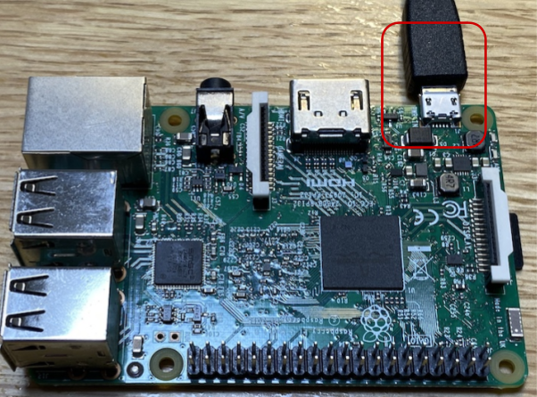
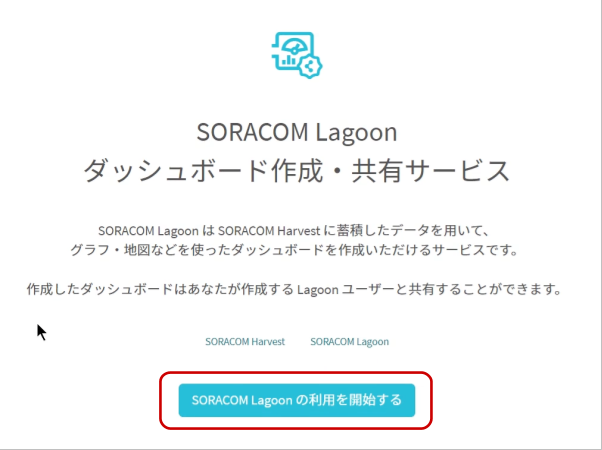
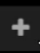
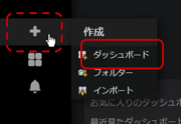

レシピ難易度：★★★★☆
お家のペットやご家族の見守りがしたい、防犯用にカメラを取り付けたいと思ったことはありませんか？本レシピでは、プロトタイピングから実際のビジネス現場でも幅広く活用される Raspberry Pi と USB カメラを使い、DIYで作る簡単な定点カメラデバイスを作成します。
本レシピは、動画コンテンツも用意しております。本レシピの動いている様子を、映像で確認できますので、ぜひ動画もご覧ください。
Raspberry Pi と USB カメラの接続・認識まで
定点画像を SORACOM Lagoon で表示
本レシピを行うのに必要な時間、概算費用
本レシピは以下の通りです。
- 必要な時間: 約2時間30分
- 概算費用: 約20,500円
※ 概算費用: ハードウェアや SORACOM を始めとした各種サービスの概ねの費用 (税や送料などの付帯費用や無料枠適用は考慮しないものとしています)
このコンテンツの進め方
ページの内容を読み、また作業を行ったら右下の［Next］を押して次のステップへ進みます。また、［Back］を使って戻ったり、左のナビゲーションメニューでもページの移動が可能です。
左上の［×］を押してコンテンツを終了することができます。また、ページを開きなおすことで再開できます。ページのアドレスはブラウザの［履歴］メニューを利用してください。
本レシピを行うためには以下のものをご用意ください。
ハードウェア
品名 | 数量 | 価格 | 購入先 | 備考 |
IoT 体験キット 〜簡易監視カメラ〜 | 1 | 16,980円 | キットの中には以下のものが含まれています。(それぞれを個別に準備しても構いません)
| |
microSD カードリーダー | 1 | 約1,600円 | ― | microSD にパソコンから書き込めるようにするために必要です。(例: エレコム カードリーダー MR3-C008BK) |
有線 LAN (USB 型のアダプタ等形状問わず) | 1 | 約1,600円 | ― | パソコンと Raspberry Pi の通信に必要です。(例: BUFFALO 有線LANアダプター LUA4-U3-AGTE-NBK) |
パソコン | 1 | ― | ― |
|
有線 LAN ケーブル | 1 | ― | ― | パソコンと Raspberry Pi の通信に必要です。 |
※ 金額はレシピ作成時となります。ソラコムで販売している金額は税抜き・送料別です。
その他必要なもの
必要なもの | 費用 | 作成方法など |
SORACOM アカウント | 無料※ |
※ アカウント作成・維持の費用の料金です。
IoT 体験キット 〜簡易監視カメラ〜(以下、IoT 体験キット) に同梱されている SIM は、SORACOM に登録することで通信が出来るようになります。そのため、まず IoT 体験キットに同梱されている SIM を SORACOM へ登録をしましょう。
※ すでに登録済み、もしくは登録済みの別の SIM を利用する場合は次へお進みください。
登録の方法は発注済みの SIM を登録する(JP)をご覧ください。約5分で完了します。
登録が完了すると SIM 管理の一覧に表示されますので、確認ください。
Raspberry Pi Imager をダウンロードします。
Raspberry Pi のダウンロードページを開き、OS に合った Raspberry Pi Imager をダウンロードします。

Raspberry Pi Imager をインストールします。
Windows の場合
ダウンロードした imager.exe を実行し、インストーラーの指示に従ってインストールを完了します。

インストール完了時の "Run Raspberry Pi Imager" はチェックを外した状態で［Finish］をクリックします。
macOS の場合
ダウンロードした imager.dmg を実行し、 Raspberry Pi Imager を Applications (アプリケーション) フォルダへコピーします。

Raspberry Pi Imager を利用して microSD カードに書き込む
手順は動画をご覧ください。
注意点: STEP2 における Raspberry Pi Imager の起動の方法
Windows | ［スタートメニュー］> "Raspberry Pi Imager" |
macOS | ［Finder］>［アプリケーション フォルダ］> "Raspberry Pi Imager" |
macOS で初回起動時に「インターネットからダウンロードされたアプリケーションです」のダイアログが表示された場合は［OK］をクリックして進めてください。
書き込みが完了したら microSD カードを取り出してください。
Raspberry Pi の起動時に、Wi-Fi への接続と SSH サービスの待ち受けをするように設定を加えます。
ファイルの作成
以下二つのファイルを作成します。テキストエディタで作成してください。
- wpa_supplicant.conf
- ssh
wpa_supplicant.conf
ctrl_interface=DIR=/var/run/wpa_supplicant GROUP=netdev
country=JP
update_config=1
network={
ssid="YOUR_WIFI_AP_SSID1"
psk="password1"
}
network={
ssid="YOUR_WIFI_AP_SSID2"
psk="password2"
}このファイルは Raspberry Pi 起動時に接続する Wi-Fi のアクセスポイントをあらかじめ書いておくことができます。 YOUR_WIFI_AP_SSID1 や password1 を皆さんのご家庭もしくは職場の環境に合わせて書き換えてください。
network={...のssid=には SSID を、psk=にはパスフレーズを書きます。network={...}は複数書くことができるので、家や職場を指定しておくと便利です。(一つでも問題ありません)
ssh
このファイルは「存在する事」が重要です。ファイルの中身は「空 (=0バイト)」にしてください。
2ファイルを microSD の "boot" にコピーする
一度取り出した microSD を再度パソコンに取り付けます。boot と表示されたディスクが現れるのを確認してください。
その後、先ほどの 2 ファイルを "boot" にコピーします。

※画面は macOSですが、Windows も同様です。
コピーが完了したら microSD を取り出してください。
Raspberry Pi の電源 ON
microSD を Raspberry Pi に取り付けます
少し残りますが奥までしっかりと刺さっていれば問題ありません。
有線 LAN で Raspberry Pi とパソコンを接続
Raspberry Pi の有線 LAN ポートと、パソコンの有線 LAN ポートをケーブルで接続します。
Raspberry Pi に microUSB (電源ケーブル) を接続
ケーブルを挿すと、電源 ON となります。（電源スイッチのようなものがありません）

しばらく経過(約1~2分)すると macOS もしくは Windows 10 から Raspberry Pi へリモートログイン出来るようになります。
SSH リモートログインの方法
Windows の場合
スタートメニューから「コマンドプロンプト」を起動します。
コマンドプロンプトで以下のように入力して実行します。
ssh pi@raspberrypi.localAre you sure you want to continue connecting (yes/no)?との問いには yes と入力します。- 初期パスワードは Raspbian のドキュメント に記載されていますので、それを利用してログインしてください。
macOS の場合
［Finder］>［アプリケーション］>［ユーティリティ］>［ターミナル］を起動します。
Terminal.app で以下のように入力して実行します。
ssh pi@raspberrypi.localAre you sure you want to continue connecting (yes/no)?との問いには yes と入力します。- 初期パスワードは Raspbian のドキュメント に記載されていますので、それを利用してログインしてください。
OS の最新化
以降は Windows、macOS 共通の作業です。
Raspberry Pi へ SSH リモートログインしたあと、Raspberry Pi 側で以下を実行します。
sudo timedatectl set-timezone Asia/Tokyo
sudo apt update && sudo apt upgrade -y
sudo systemctl reboot最後の1行で再起動となります。
Raspberry Pi 起動し SSH リモートログインが出来ることを確認してください。以降は、特に断りを入れない場合は SSH リモートログイン後の Raspberry Pi 側で実行します。
USB カメラを認識しているか確認する
USB カメラを Raspberry Pi に接続します。接続先 USB ポートはどこでも構いません。
USB カメラが接続されている状態で、 以下を実行します。
v4l2-ctl --list-devicesこのような出力ならば USB カメラが認識できています。
bcm2835-codec-decode (platform:bcm2835-codec):
/dev/video10
/dev/video11
/dev/video12
BUFFALO BSWHD06M USB Camera
: (usb-3f980000.usb-1.1.2):
/dev/video0
/dev/video1もし認識できていない場合は以下のように Cannot open device ... と表示されます。USB カメラを挿し直したり、他のカメラと変更してみてください。
USB カメラを動かしてみる
USB カメラの認識ができている事が確認できたら、以下を実行します。
sudo apt install fswebcam -y
fswebcam -q --device /dev/video0 test1.jpg
python3 -m http.server 8000簡易的な Web サーバが Raspberry Pi 上で起動しました。
ここでホスト側のブラウザから http://raspberrypi.local:8000 を開き、ファイル一覧の中に表示された test1.jpg をクリックします。
カメラの画像が確認できればカメラが正常に動作している確認となります。
Raspberry Pi 側に戻り CTRL + C を押して、Webサーバを止めます。
Raspberry Pi へ SSH リモートログインが出来ることを確認してください。以降は、特に断りを入れない場合は SSH リモートログイン後の Raspberry Pi 側で実行します。
setup_air.sh の実行
USB ドングル型モデムで SORACOM Air によるインターネット接続の一連の設定を自動化する setup_air.sh を実行します。
以下を実行してください。
curl -O https://soracom-files.s3.amazonaws.com/setup_air.sh
sudo bash setup_air.shUSB ドングル型モデム (AK-020) に SIM を取り付け、Raspberry Pi に接続する
以下の図を参考に取り付けてください。
Raspberry Pi の USB ポートはどこでも構いませんが、この後に接続する USB カメラとの位置で競合しないようにしてください。USB ドングル型モデム、USB カメラ共に Raspberry Pi の電源が ON 状態でもいつでも抜き挿し可能です。
接続を確認する
USB ドングル型モデムの LED を見ながら接続状態になったのを見計らって、以下を実行します。
ping -c 4 pong.soracom.ioこの時、期待される出力は以下の通りです。
PING pong.soracom.io (100.127.100.127) 56(84) bytes of data.
64 bytes from 100.127.100.127 (100.127.100.127): icmp_seq=1 ttl=64 time=75.6 ms
64 bytes from 100.127.100.127 (100.127.100.127): icmp_seq=2 ttl=64 time=58.8 ms
64 bytes from 100.127.100.127 (100.127.100.127): icmp_seq=3 ttl=64 time=55.4 ms
64 bytes from 100.127.100.127 (100.127.100.127): icmp_seq=4 ttl=64 time=43.4 msこれで Raspberry Pi から SORACOM Air を通じてインターネット接続が可能になりました。
IoT ファイルの保管サービス「SORACOM Harvest Files」へ、定点カメラの画像をアップロードできるようにします。
SORACOM ユーザーコンソールにログインした後［Menu］>［SIM 管理］とクリックして SIM 管理画面を開きます。

USB ドングル型モデムに取り付けた SIM にチェックを付け、［操作］>［所属グループ変更］とクリックします。

「新しい所属グループ」のプルダウンボックスをクリックした後、［新しいグループを作成...］をクリックします。

「グループ作成」のグループ名を入力して［グループ作成］をクリックします。
項目 | 例 | 備考 |
グループ名 |
| 自由に入力可能です。日本語も設定可能です。 |
新しい所属グループが先ほど作成したグループになっていることを確認したら［グループ変更］をクリックします。
自動的に SIM 管理画面に戻ります。
SIM の「グループ」に先ほど作ったグループが設定されていることを確認してください。
以上で、グループの作成と所属の作業は完了です。
SIM 管理画面から、先ほど割り当てたグループ名をクリックします。
［SORACOM Harvest Files 設定］をクリックし設定画面を開いた後、［ON］をクリックして設定できるようにします。その後以下のように設定します。
項目 | 値 |
デフォルトパス |
|
ロール | (空) |
最後に［保存］をクリックしてください。
SORACOM Harvest Files へテストでアップロードしてみる
以下を実行します。
fswebcam -q --device /dev/video0 test2.jpg
curl -X POST -H 'Content-Type: image/jpeg' --data-binary '@test2.jpg' harvest-files.soracom.ioSORACOM Harvest Files 上にファイルができているか、確認します。
これで、カメラの画像を手動で SORACOM Harvest Files にアップロードできるようになりました。
SORACOM Harvest Files は「ダウンロード」することでファイルの中身を確認できます。ところが画像ファイルであれば SORACOM Lagoon でも直接表示する事ができるので、連動させてみます。
SORACOM Harvest Files の追加設定
SIM 管理画面から、先ほど割り当てたグループ名をクリックします。
［SORACOM Harvest Files 設定］をクリックし設定画面を開いた後、Harvest Data 連携設定を［ON］にしたあと、追加で以下の設定します。
項目 | 値 |
保存対象のパス |
|

最後に［保存］をクリックしてください。
SORACOM Harvest Files へテストでアップロードしてみる
以下を実行します。
fswebcam -q --device /dev/video0 - | curl -X POST -H 'Content-Type: image/jpeg' --data-binary '@-' harvest-files.soracom.ioSORACOM Harvest Data を確認する
SORACOM Lagoon と SORACOM Harvest Files の連携は「SORACOM Harvest Data に格納されているデータを SORACOM Lagoon が読み取る」ことで実現しています。
そのため、SORACOM Harvest Data にデータが作成されているかを確認します。
［Menu］>［SIM 管理］とクリックして SIM 管理画面を開きます。
SORACOM Harvest Data でデータの表示を行いたい SIM (USB ドングル型モデムに挿した SIM) にチェックを付け、［操作］>［データを確認］とクリックします。

以下のようにデータテーブルに url が入ってれば成功です。
設定と設置が完了したら、蓄積されたデータを SORACOM Lagoon で活用していきます。
SORACOM Lagoon 用語解説
ここで SORACOM Lagoon で使われる用語を解説します。
用語 | 意味 |
プラン | SORACOM Lagoon の契約プランです。機能と料金が異なります。SORACOM Lagoon のご利用料金に機能や料金の比較表があります。 |
メトリクス (メトリック) | データが格納されている先です。SORACOM Lagoon では以下の4つの中から選び、その中からノード(SIMや回線)を選択します。
|
データソース | メトリクスの参照先です。SORACOM Lagoon では "Harvest" (= SORACOM Harvest) を選ぶとメトリクスが展開されます。 Grafana ではテスト用のランダムデータが表示されます。 |
パネル | パネルはデータを表示する領域です。データソースとメトリクスを指定すると、そのメトリクス(たとえばSIM)のデータをパネルで使えるようになります。 様々なパネルが存在します。 |
ダッシュボード | 複数のパネルを束ねて「1枚の画面」にしたものがダッシュボードです。共有の単位となります。 |
SORACOM Lagoon ユーザー (Lagoon ユーザー) | SORACOM Lagoon へログインするためのユーザー(IDとパスワードの組) SORACOM ユーザコンソールへのログインとは異なるユーザ一覧となり、皆さん自身で登録・削除が可能です。ダッシュボードやパネルを編集できる「編集可能」と表示専用の「読み取り」の2段階の権限を設定できます。 作成可能数はプランによります。 |
データリフレッシュ | SORACOM Harvest から SORACOM Lagoon へデータが反映される事、もしくは反映タイミングとなります。反映タイミングはプランによります。 |
アラート | メトリクスのデータに対して条件を設定し、その条件を満たしたら通知を行う仕組みの事です。 |
SORACOM ユーザーコンソールの［Menu］>［データ収集・蓄積・可視化］>［SORACOM Lagoon］とクリックします。

［SORACOM Lagoon の利用を開始する］をクリックします。

プランのうち［Free］を選択したあと［続行する］をクリックします。

SORACOM Lagoon ユーザーの初期ユーザーに設定するパスワードを入力した後、［利用開始］をクリックします。

SORACOM Lagoon の有効化に成功すると、以下のように SORACOM Lagoon コンソールへのリンクと、Lagoon ユーザーの一覧が管理できるようになります。
この画面を SORACOM Lagoon 管理画面と呼びます。

SORACOM Lagoon 管理画面は、SORACOM Lagoon が有効化されている間は ［Menu］>［データ収集・蓄積・可視化］>［SORACOM Lagoon］で表示する事ができます。
SORACOM Lagoon 管理画面を表示したあと、［SORACOM Lagoon console にアクセス］をクリックします。
※ SORACOM Lagoon 管理画面は ［Menu］>［データ収集・蓄積・可視化］>［SORACOM Lagoon］で表示する事ができます。

SORACOM Lagoon へログインします。
メールアドレス (SORACOM ユーザコンソールへログインする際のメールアドレス) と、SORACOM Lagoon 初期ユーザ作成時に利用したパスワードでログインします。

ログインに成功すると、以下のような画面が表示されます。これが SORACOM Lagoon ログイン直後の画面です。ここから「ダッシュボード」や「パネル」を作成していきます。
作成アイコンにカーソルを乗せると表示される「作成」メニューから［ダッシュボード］をクリックします。

SORACOM Dynamic Image Panel をクリック
以下の設定をします。
タブ | 項目 | 作業・設定 |
メトリック | メトリック |
|
設定 | モード | Harvest Files |
名前 | A-url |
最終的には以下のようになります。
SORACOM Harvest Data に蓄積された最新データに url が含まれていれば、その URL にしたがって SORACOM Lagoon は画像を表示します。 /v1/files/... のURLは SORACOM Harvest Files を指すため、Harvest Files の画像を表示する仕組みです。
これで、「画像が送信されたら SORACOM Lagoon に最新画像が表示される」が実現できました。
ただし、肝心の画像送信が手動ですので、最後に自動化します。
カメラの撮影管理
撮影指示を受ける側
以下を実行します。
sudo loginctl enable-linger $USER
curl -O https://gist.githubusercontent.com/ma2shita/e0545e6c1b51ac32026f1ae197226512/raw/ee292aaba9f319167e4de50a599725fdb959e34c/camera_shooting.bash
curl -O https://gist.githubusercontent.com/ma2shita/c79aad276c0b0f3eccb8e0040b5bc106/raw/2fc0171be99191d3b67490d3d167db42ffac1b1a/camera_shooting@.service
curl -O https://gist.githubusercontent.com/ma2shita/61ba5f98b3e50a025e0b51a43417d6e2/raw/258c0b8749cbba6ac3f4164049997e974ef14553/camera_shooting.socket
systemctl --user enable $PWD/camera_shooting.socket
systemctl --user enable $PWD/camera_shooting@.service
systemctl --user start camera_shooting.socket
journalctl -n 1最後の journalctl で期待される出力は以下の通りです。
Nov 05 12:55:57 raspberrypi systemd[677]: Listening on Shooting camera server (listener).カメラの撮影指示をする側
期待通りであれば、続けて以下を実行します。
echo "shooting!" | nc 127.0.0.1 19000
journalctl -n 6最後の journalctl で期待される出力は以下の通りです。
Nov 05 12:56:34 raspberrypi systemd[677]: Started Shooting camera server (implementation) (127.0.0.1:53164).
Nov 05 12:56:34 raspberrypi bash[2505]: Taking a Photo!
Nov 05 12:56:36 raspberrypi bash[2505]: % Total % Received % Xferd Average Speed Time Time Time Current
Nov 05 12:56:36 raspberrypi bash[2505]: Dload Upload Total Spent Left Speed
Nov 05 12:56:37 raspberrypi bash[2505]: [237B blob data]
Nov 05 12:56:37 raspberrypi systemd[677]: camera_shooting@6-127.0.0.1:19000-127.0.0.1:53164.service: Succeeded.うまく動作していれば、また新たな画像が SORACOM Harvest Files にアップロードされているので、SORACOM Lagoon 上で確認することができます。
タイマー管理
期待通りであれば、続けて以下を実行します。
curl -O https://gist.githubusercontent.com/ma2shita/ce40d5794146dbd147d5cb63eb3eb841/raw/22248196a776adac0b92d995865e3eebbd6f412a/timer_shooting.bash
curl -O https://gist.githubusercontent.com/ma2shita/7004d3f35f03a67815e734042eea9cf2/raw/4d5cbc3985a9dd4bbd494ee3b6da6b306d4aa7b1/timer_shooting.service
curl -O https://gist.githubusercontent.com/ma2shita/97519a3f0a6cb936f7480b5de11dc444/raw/9d607f3a86f1bcae07e824b821c284e0a5e30f53/timer_shooting.timer
systemctl --user enable $PWD/timer_shooting.timer
systemctl --user enable $PWD/timer_shooting.service
systemctl --user start timer_shooting.timerこれで、10分に1回カメラ撮影がされて SORACOM Harvest Files にアップロードされるようになりました。
次回の起動までの残り時間といった状態は以下のコマンドで確認できます。
systemctl --user status timer_shooting.timerこの章で行った構成の相関図
※ gpio6_shooting については Appendix で解説します。
本レシピでは費用がかかるサービスを利用しています。
本項をよく読み、必要な操作や解除作業を行うようにして、想定外の費用が掛からないようにしてください。
費用について
ここで記載している金額は全て税別、送料別となります。
SORACOM プラットフォームの利用料金
サービス／機能 | 料金 |
(今回の利用であれば 100MB 以内で収まる範囲) | |
SORACOM Harvest FIles は一般的なファイル管理サービスとは異なり「データ転送量」に応じた課金体系です。保管されているファイル(サイズ)には費用は発生しません。例えば先月に1GBのファイルのアップロードを行った場合、1GBの転送に関して課金されます。翌月の転送が0バイトだった場合、先月の1GB分は保管されていますが、このファイルには費用は発生しません。 また、SORACOM Harvest Files の "Harvest Data 連携" にて作成されたデータは SORACOM Harvest Data の課金対象外となっています。 (今回の利用であれば 1GB(=200円)以内で収まる範囲) | |
今回は Free プラン(無料)を使用しました。 |
※ 費用詳細はリンク先をご確認ください。
グループ解除
SORACOM Harvest Data 等、「機能が有効になっているグループに所属している SIM × 費用」となっているサービスにおいては、「機能を OFF にする」することで費用の発生を抑えることができます。またもう1つの方法として「グループに所属している SIM の数を減らす(= 解除する)」事でも費用を抑える事ができます。
グループ解除の方法はグループからの解除 (JP)をご覧ください。
SORACOM Lagoon の解約
SORACOM Lagoon はオンラインで解約が可能です。 Free プランであれば有効化しておいても費用は発生しませんが、長期に渡って利用しない場合には解約も選択いただけます。
解約の方法はSORACOM Lagoon の解約(JP)をご覧ください。
本レシピでは、安価なデバイスを用いて定点カメラの仕組みを SORACOM サービスと組み合わせて実現しました。本来であればファイルサーバや画像を見るためのアプリケーション開発が必要なところを、様々組み合わせることで実現しています。今回は「全てをクラウドに送って、そこで利用する」方式でしたが、「デバイス上で判定してからクラウドと通信する」といったエッジコンピューティングの流れもあります。どちらにしても、カメラは高度なセンシングデバイスとして、より発展していくことが考えられます。
よくあるご質問はLet's try IoT プロトタイピング ～ 定点カメラデバイスを作ろう 〜 動画とQAのご紹介でご案内しています。こちらもご覧ください。
GPIO からの信号をきっかけにカメラ撮影が可能です。例としてタクトスイッチを利用しています。
GPIO の BCM Pin 番号の 6 と GND に接続します。
以下を実行します。
sudo apt install wiringpi -y
curl -O https://gist.githubusercontent.com/ma2shita/22d5161ee03da4971560bb96078a1596/raw/596a724365b972b7689922851498ba29d4506f18/gpio6_shooting.bash
bash gpio6_shooting.bashテストをしてみます。タクトスイッチは押されると 0 として認識されます。(普段が 1 です)
そのため 1 から 0 に変化したときに TCP localhost:19000 を呼び出す(= camera_shooting を起動) するようになっています。
動作の様子は以下の通りです。
gpio6_shooting.bash
Diff!: 1 -> 0
gpio6_shooting.bash END
gpio6_shooting.bash
Diff!: 0 -> 1
gpio6_shooting.bash ENDあとはこのプログラム(gpio6_shooting.bash)がバックグラウンドで起動するようにします。以下を実行します。
curl -O https://gist.githubusercontent.com/ma2shita/8ee3f93a209025433c5a44bddbcdaaba/raw/2d62931aadf85807b98c3d356617798fc942ce2c/gpio6_shooting.service
systemctl --user enable $PWD/gpio6_shooting.service
systemctl --user start gpio6_shooting.service